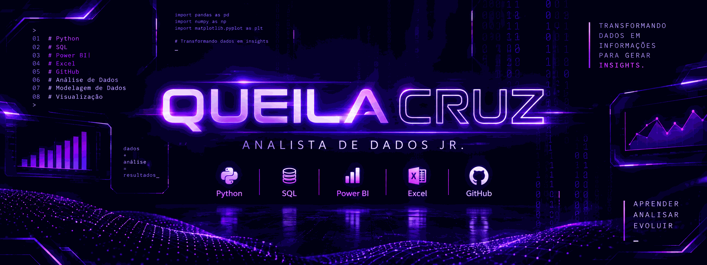

GourmetBox — DataLab
Análise integrada de CRM, ERP e e-commerce com foco em indicadores de negócio.
Ver projeto ↗
Sou Queila Cruz, profissional em transição para a área de Dados, com formação em Administração e pós-graduação em Análise de Dados. Desenvolvo projetos práticos com Python, SQL, Power BI e Excel.
Da experiência administrativa para a análise de dados.
Minha experiência profissional me proporcionou contato com planilhas, sistemas, relatórios, acompanhamento de processos e organização de informações.
Hoje concentro meus estudos em análise, tratamento e visualização de dados, buscando unir conhecimento de negócio com ferramentas técnicas.
Ferramentas presentes nos meus estudos e projetos.
Projetos práticos desenvolvidos durante minha formação em Dados.
Análise integrada de CRM, ERP e e-commerce com foco em indicadores de negócio.
Ver projeto ↗Dashboard para exploração de dados ambientais e geográficos com visualizações interativas.
Ver projeto ↗Tratamento e análise de dados de entregas de orquídeas, com filtros e indicadores.
Ver projeto ↗Dashboard para manutenção, combustível e utilização de veículos por filial.
Ver projeto ↗Minha trajetória acadêmica e técnica.
Formação concluída.
Formação concluída.
Formação concluída.
Curso em andamento.
Formação prática em análise de dados, programação e ferramentas de tecnologia.
Estou aberta a oportunidades na área de Dados e a conexões com profissionais que compartilham interesse por tecnologia e análise.